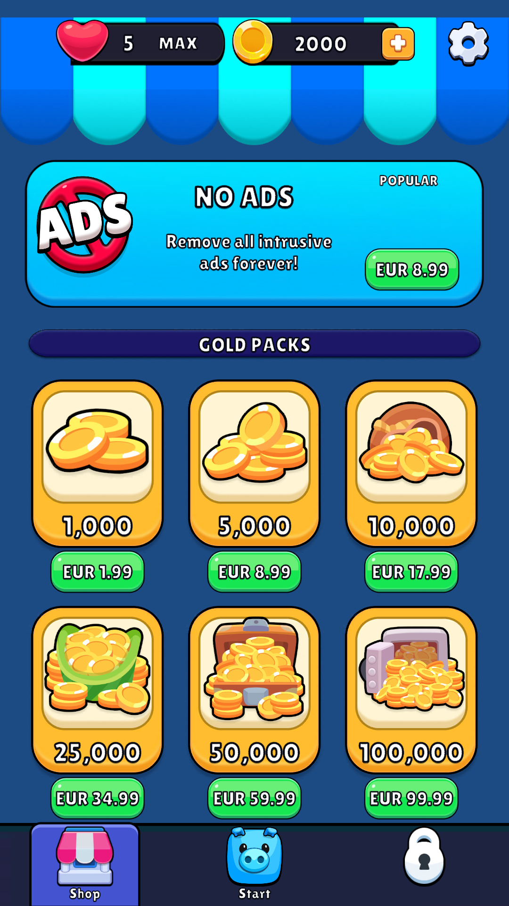
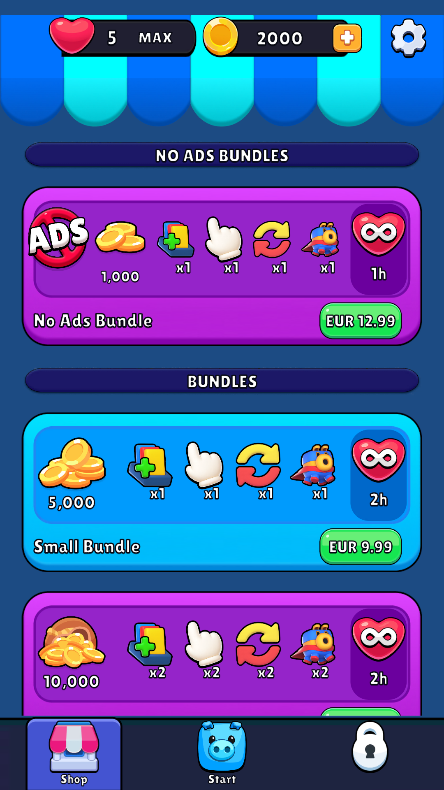
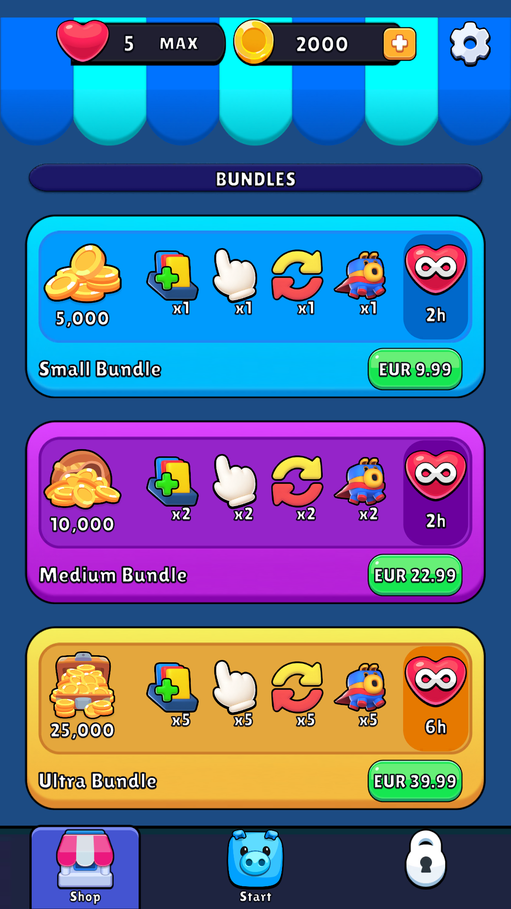
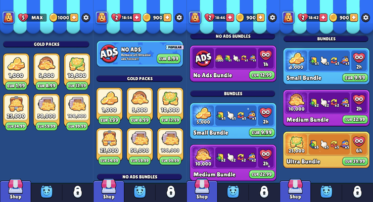

11 offers; Restore removed; original No Ads/Gold2x; Unity27/27 passed. Fake gateway only. Isolated level36/2000coin fixture. Game View readbacks below at1080?1920; native0.36.3 pixel parity and real payments remain unverified.




Source art comes from the extracted0.36.3 catalog; capture and source image are different evidence roles.